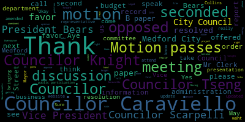
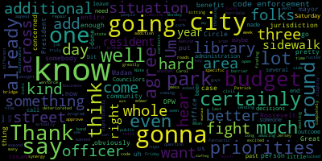
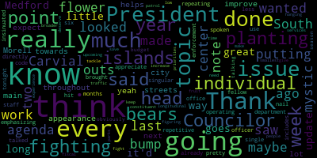

AI-generated transcript of City Council 05-31-22
English | español | português | 中国人 | kreyol ayisyen | tiếng việt | ខ្មែរ | русский | عربي | 한국인
Back to all transcripts
[Morell]: 22nd regular meeting of the Medford City Council May 31 2022 is called to order. Mr. Clerk, please call the roll.
[Hurtubise]: Vice President Bears. Present Council carry on. That's it. That's a Collins. And then, that's a night. Councilor Scarpelli. Present Councilor Tseng. I see Councilor Tseng present morale. seven present zero absent the meeting is called to order please rise to salute the flag United States of America to the Republic for which it stands, one nation under God, indivisible, liberty and justice for all.
[Morell]: On the motion of Councilor Caraviello to suspend the rules to take paper 22-367 out of order, seconded by Councilor Tseng. Mr. Clerk, please call the roll. Oh, he can't see us though. All right, great. All those in favor? Opposed? Motion passes. Petitions, presentations, and similar papers. 22-367, petition for a common victor license by Carol Nigro, 15 Waddell Street. Medford, Massachusetts, 02155, for Chapters Coffee Cars Corporation, 111 High Street, Medford, Massachusetts, 02155. On file, business certificate, building department, fire department, police and traffic, health department, letter of compliance, state tax ID, workman's... We do have the petitioner here, if you'd like to come speak, and I can also hand it off to the chair of our licensing subcommittee, Councilor Caraviello. I'm not sorry, Councilor Caraviello.
[Scarpelli]: Thank you, Madam President. And thank you for Ms. Nigro being here this evening. For my colleagues, I see everything in order. I know that I'll move approval after you give us a brief description. I know we're excited about this business venture and can't wait to get it started, but if you can.
[SPEAKER_04]: Thank you for having us here tonight. We're finally here. Chapters Coffee Carts, I think most of you know, is a nonprofit company that we've been two years creating specifically to be located in the new Medford Library. Our mission is to set up supported work sites for people with disabilities. We'll provide them with a paycheck, the supports they need to have success. job skills and training that they need to move further out into the community. Also on our cart, everything we serve is from other Medford businesses. Our coffee is from Mr. Coffee Roasters. We have bagels from Goldilocks. We have sandwiches from Stop and Shop. We have our canned soda and snacks is from BJ's. We have pastries from Wegmans. Our menus were created by two seniors from Medford High School Graphic Arts Department. They did a really nice job designing those menus. Our snack bags, we've had children from most of the schools in Medford designing them for us. We've had kids from preschool all the way up through high school decorating them. So we've involved much of the community as we can. And I have to say the response that we've gotten from this community has been overwhelming. We're happy to do this in Medford to start here. And we hope that other cities and towns will look at us as an example.
[Scarpelli]: Excuse me. all the hard work. This is a great venture that you put forth and we're so lucky to have have you here in Medford, and I think it'll be a great example and a shining star to, to really push off into other communities and show them what a great opportunity this can be. So I, I see everything in order, Madam President, after my colleagues speak, I move approve.
[Morell]: So, thank you.
[Caraviello]: came to my Kiwanis club and did a presentation. And that's when we first met. And since then I've done my best to spread the word about what they do and how they do it. And yeah, it's a good idea. Especially when you're helping people with disabilities. Earn a living, get a paycheck every week and give them dignity. Not just getting money for doing nothing. I'm sure I know they'll work hard to make this successful. And I can't wait to hopefully see you on Saturday, get this up and going. So again, congratulations. I know it's been a long journey for you, but you're here and good luck going forward.
[Morell]: Thank you for your support. Thank you. Thank you, Councilor Cabrera. Any further discussion? Vice President Bears.
[Bears]: Thanks for doing this, Carol. And I just wanted to thank you. I know you've been long time residents of the community. I was lucky enough to be in the band with your son, Patrick. And I think it's just amazing how much you've done already and finding the synergy with the library to expand your program to the whole community. I've seen so many people going through the library already, and I know that they're gonna benefit greatly from your business. I did have one question. I know it's already in here, but just for the benefit of the public, you guys are gonna be open from nine to three at the library. And is that Monday through Friday?
[SPEAKER_04]: Yes, we'd like to start nine to three, that's Monday through Saturday.
[Bears]: Great.
[SPEAKER_04]: And eventually we'd like to start opening when the library has special evening events.
[Bears]: Fantastic. Thank you so much for doing this and we're all excited to approve it.
[Morell]: Thank you, Vice President Bears. Any further discussion? So on a motion to approve from Councilor Scarpelli, seconded by Councilor Naik. All those in favor? Aye. All those opposed? The motion passes. Congratulations. Thank you. Come see us Saturday. On a motion of vice-president Bears to revert to the regular order of business, seconded by Councilor Caraviello. All those in favor? All those opposed? Motion passes. Announcements, accolades, remembrances, reports and records. Records. The records of the meeting of May 24th, 2022 were passed to Councilor Scarpelli. Councilor Scarpelli, how did you find them? On the motion of Councilor Scarpelli, seconded by Vice President Bears. All those in favor? Aye. All those opposed? Motion passes. Reports of committees, 22-354, May 24th, 2022, Committee of the Whole report. I'll jot my memory on this. Oh, this was our yes this was our pre budget meetings where the council set a number of priorities which we would like to see included in this year's budget as well as additional recommendations that we individual Councilors made and those were delivered to the administration. On the motion of Council night to approve the committee report second my Councilor Tseng all those in favor. All those opposed. Motion passes. Moving on to motions, orders and resolutions. 22-361 offered by Councilor Caraviello. This is a resolution, I'm gonna read it through, but this is a resolution I had the clerk put on again from last week in hopes that we could have a presentation by those requested. They're unable to be here tonight. Hopefully this is something we can have a presentation on the future. I'm just gonna read it briefly. So be it resolved that the Medford City Council have a representative from Eversource attend the next city council meeting to give the council an update on their ongoing project on Mystic Avenue and Winthrop Street. Be it further resolved that the DPW commissioner, city engineer, and transportation director attend the next meeting. Unfortunately, none of these representatives could make it tonight. So if we want to table this paper, Councilor Caraviello.
[Caraviello]: Thank you, Madam President, for putting this back on again. Madam President, probably 10 minutes ago, I received a call from a resident of the area informing me of a meeting tomorrow night. have been nice if the people who asked for the meeting were told to be about the meeting and we asked for a meeting to be here not held on zoom on a night that again one night before we even even knew about it so quite frankly uh i'd like to have a meeting here because obviously you know we're already scheduled for things tomorrow night and Again, this is an important meeting just to find out the day before the meeting and to neighbors without even being notified. Transparency at the worst.
[Morell]: Thank you, Councilor Caraviello.
[Unidentified]: Do I have a motion, Vice President Bears?
[Morell]: On the motion of Vice President Bears, seconded by Councilor Tseng, all those in favor? All those opposed? The motion passes. And I will continue to work to see if we can get those representatives to attend the next meeting or the next meeting. And again, there is, but there is a meeting for folks watching. There is a meeting with some updates, a number of which we have been requesting as a council for months at this point, but there is a meeting about the Eversource project tomorrow night on Zoom at 6 p.m. 22-368 offered by Councilor Caraviello. Be it resolved that the Medford City Council have the Mayor clean and landscape the bump outs and center islands within the city. Councilor Caraviello.
[Caraviello]: Thank you, Madam President. We went around and we made these, we put in these islands and these bump outs, and now they're becoming weed cities. If you go to Winter Street, the bump out there is just a bunch of weeds. You drive down to the other parts, all we're getting is weeds and all these bump outs in these islands. So instead of making them look nice by putting some landscaping on them, all they are is just weeds growing at them. In the interest of some curb appeal, if we could at least get them cleaned up and the grass mowed out of them, because they say they're just, they're not appealing looking. And I say, there's just hunks of concrete in the middle of the street with dirt and weeds growing around them. So, you know, if they come up with a plan, maybe put some plantings on them or something to make them look a little better, but at least clean up the ones that are just overgrown and just look filthy. So.
[Morell]: Thank you, Councilor Caraviello. Councilor Collins.
[Collins]: Thank you, President, we're all thank you Councilor Carvial for putting this on the agenda I just wanted to note I saw maybe it was last week or two weeks ago, some looked like planting flower planting work being done in some of the bump outs or center islands. Off of made a mystic and South Medford and just to your point it really is an issue of a little goes a long way. So I think it'd be great to get an update on is that going to be done throughout the city where can we expect for it to be done next. You know, towards your point, you know, really helps a lot to improve the appearance of our main streets.
[Knight]: Is that the air system?
[Morell]: Yes. I assume. Councilor Knight.
[Knight]: If I could just amend the paper or offer a B paper, Madam President, requesting that the mayor provide us with a report on the status of the Adopt-A-Site program. Under the McGlynn administration, the Adopt-A-Site program was relatively successful. It was a program where local businesses could adopt an island or a rotary or a site in the city, and then perform the upkeep and maintenance on it in exchange for a small advertising billboard on that parcel. and that was something that seemed to work out pretty well. So I'm hoping that the administration can provide us with a report back on the status of that program.
[Morell]: Thank you, Councilor Knight. Any further discussion? So we'll take the B paper first. Do I have, we have the motion from Councilor Caraviello on the main paper. Do I have a second for that? And then the B paper, do we have a second for the Councilor Tseng? So Mr. Clerk, we'll take the B paper first. Do you have the wording for the B paper? Were you able to hear that?
[Hurtubise]: Councilor Newton. Thank you, Mr. Mayor. Hang on. Councilor Knight requested an update. From the mayor on the, uh on the adopt, uh On the adopt a site program.
[Morell]: Yes Okay, I didn't get the Councilor Knight on the B paper, seconded by Vice-President Bears. All those in favor? All those opposed? The motion passes. On the main paper from Councilor Caraviello, seconded by Councilor Tseng. All those in favor? All those opposed? The motion passes. 22-369 offered by Councilor Caraviello. Be it resolved that the Medford City Council have mass stop, mow the grass at the rotary and off and on ramps to route 93. Councilor Caraviello.
[Caraviello]: The grass on Webster Street is three feet tall. I think they mowed the rotary today, but all the off-ramps and on-ramps coming off 93, I don't know which is worse, the DOT or the DCR. They just let stuff grow forever. But the grass is four feet tall in some places. At the Roosevelt Circle Rotary, there's been bags of rubbish there for four weeks, just piled up there. And those off-ramps, weeds and everything, the grass is just growing ridiculous. I mean, I don't know what we have to do to get either one of these organizations to actually do their job. So do we have to call, I mean, if you want to contact the state delegation again, that's fine. But again, no one seems to be doing anything here. And all we're doing is we're looking down like a rundown city.
[Morell]: Thank you, Councilor Caraviello. Vice Mayor Bears.
[Bears]: Thank you, Madam President. In this specific case only, I can say that DCR is doing a slightly better job because they were down with the mower across the street from me doing their jurisdiction of the Roosevelt Circle area. But it's truly a mess. You went through it very well. In addition to that, we still have a broken bridge with no timeline for repair. There's actually a bunch of rusted iron now sitting on Roosevelt Circle behind a Jersey barrier. So, I mean, it's deteriorated significantly. It looks horrible.
[Morell]: Thank you, Councilor Caraviello. Any further discussion? Councilor Knight.
[Knight]: Well, it's good to see that DCR has been out there. I didn't know if they were participating in No Mo' May or not. But I would like to ask the sponsor if I could, if you'd be willing for me to amend the schedule, just to request, amend the resolution rather to request the maintenance schedule for Medford-Holme parcels from the DCR and the DOT.
[Morell]: Thank you, Councilor Knight. Any further discussion? Mr. Clerk, do you have the language for that amendment?
[Hurtubise]: I do. It's a request for the maintenance schedule from DCR and DOT for those properties.
[Morell]: Thank you. So on the motion of Councilor Caraviello, as amended by Councilor Knight, seconded by Councilor Tseng, all those in favor? Aye. All those opposed? The motion passes. Councilor Newton. 22-370 offered by Councilor Scarpelli. Be it resolved that the Medford City Council discuss the safety concerns dealing with dogs off leash at Tufts Park. Councilor Scarpelli.
[Scarpelli]: Thank you, Madam President. This is a concern that I know we had. We talked, um, yeah, a few years back about some concerns about, um. not having a dog park in the South Method area. And I think that there were some concerns and there were some questions asked if we could possibly use the small park area where the old South Method pool was and we could erect a fence. where we could have it's a wide open space and we talked about possibly putting in a fence there and having dogs run off the leash in that area and there was some banter back and forth and we really didn't get get far with that and we really haven't heard much because of the pandemic and and to be honest the lack of activity down there for from different youth organizations. Well, I know that this past season, they've been some concerns with dogs off their leash, while kids are playing, especially girls softball. That's the phone call I a few phone calls I received. And I did call the mayor's office. And I know that they They talked to the animal control officer. They supposedly sent someone out, but nothing has been resolved. The parents of the youth softball program had some concerns and I wanted to bring this forward so we can shed some light. I understand I'm a dog lover, but I think that the safety of our residents, especially in a park, especially children, I think have to be first and foremost. And I know if there's, there could be a way that we can meet with, you know, I know there's, they're very organized organization for the dog walkers and group in South Medford at Tufts Park, maybe that we can work with meeting with them and the city administration to see if we can find a way that maybe putting in even if it's a temporary fence and the gate that that people really want to leave, take the dogs off the leash that there is an area there that's enclosed. I know that they're very respectful dog owners and they clean up after the dogs and that's not an issue there and but it is a concern that even though the dogs are playful, it's left some negative marks in a few children's eyes and dogs are off leash that, you know, see a child that's playing with the ball and the dog runs up and thinks that it's playtime and they take the glove away from the child, it leaves a negative mark and it's frightening. So these are things that are concerning. I know, you know, it might have been one or a few issues, but as this happened and the word cut out, I got a few phone calls from parents that the children play in the playground area and they They, they shared some concerns about the dogs around the other side of the fence and, you know, having the child run outside of the playground area onto the into the park they had some concerns so there are some valid issues there and I think that this is something we need to revisit as a council before. something serious happens. And again, if it's an isolated incident, that's fine, but still, now that we know this is happening, I don't want the next isolated issue being something where a child gets bit and we could have done something about it. So I know that, I know the police, we've tried to, I've asked for patrol, I've asked for the animal patrol officer to go out patrol the area, but from what I've gathered from the parents, there hasn't been enough visibility from the city's departments that are protecting the children in that area. So if we could just maybe make a motion to ask the report from the city administration and what they've done and that we can share with the community and then to see if the city can reach out. I know that the city administration told me that there's actually a person that organizes a lot of the dog activity there that we can maybe work together and try to see if there's something we can do that can accommodate all the parties and make sure that we can put maybe even if it's a temporary safe, at least during the sports seasons, that they have that area on the side that we can fence in that would separate them.
[Morell]: So, thank you. Thanks, Councilor Caraviello.
[Caraviello]: Thank you, Madam President. Again, you know, this is something that There's a problem a few years ago and it kind of quieted down. And now that the kids are back in the parking and it seemed to read it, read it said again. Council cut Scott plays right. We have that area where that you'll touch pool was. I don't think it's that big of a deal to fence it in during for the summer so when the kids aren't out there, at least gives the dog somewhere to go in. and keeps them away from the kids during their time of their death. So again, I'd like to amend the motion that the site of the old Tufts pool be temporarily fenced in to allow the dogs to at least go there and roam around with a safe, this way they won't be a danger to the children that are playing there.
[Morell]: Thank you, Councilor Caraviello. Councilor Knight.
[Knight]: Madam President, if I recall correctly, I think one of the biggest issues when this issue first came up was the fact that they didn't want fences, they wanted to be free range. And the issue was that when the dog is off leash, but in a fenced in or caged in area, they may feel cornered and become aggressive. And that's why they don't want any fence there. I think that that's what the sticking point was last time. That coupled with the fact that I believe we were stuck uh, in a situation where the pox department and the pox commission has a policy that's in place and they weren't willing to make a ruling on it until, uh, some further information was provided to the city of industry, uh, administration relative to, uh, bathroom facilities and the like down to that box. Thank you.
[Morell]: Councilor Knight, any further discussion?
[Scarpelli]: If I can, Madam President, I recall that strictly I know there were a couple issues that they, I think it's a big enough area that that dogs can run free and I think that another question that was brought up by that organization is that there wasn't enough separation from small dogs and big dogs so I don't. To be honest with you, I think my first priority is the safety of the children in that playground. So let's see if we can move forward, see if we can find some sort of even just, even make it a pilot program for the rest of the summer, just to see how that works and then go from there. But right now, I think that's something that has to be imminent. I don't want to be sitting here in a week and there was no action and a child was bit by a dog. I just, I feel terrible. So thank you, Madam President.
[Morell]: further discussion. I want to thank you Councilor Scarpelli for bringing this up. I know we've all been getting the phone calls in the email. So I really thank you for bringing this forward to have this discussion because I think we've all been talking to the administration kind of individually and understandably a lot of folks in the situation aren't really satisfied with the answers they're getting. So I think this really pushes us to do more and see if we can get some transparency around this issue and some different ideas. So we have the motion from Councilor Scarpelli as amended by Councilor Scarpelli and Councilor Caraviello.
[Caraviello]: Second.
[Morell]: And seconded by Councilor Caraviello. All those in favor?
[Caraviello]: Aye.
[Morell]: All those opposed? Motion passes. 22-371 offered by Councilor Tseng be resolved at the Medford City Council request the city administration update the city's website city websites text on COVID-19 information and frequently asked questions, Councilor Tseng, Thank you, President moral.
[Tseng]: Um, you know, our city website is in need of updates and repair. Um, I think that's evident, evident to everyone using the city website. I think this is this is a way for us to start chipping away at the at the at the outdated information on there, and if we chip away, hopefully we can fix the most glaring problems on the city website. Right now, I was helping someone do some research into our COVID-19 policies, and in the FAQ section, it's just completely outdated. I think the information is from probably October of 2020, which is almost two years ago. And there's, as I said at the budget meeting, there's a lot of outdated information about where masks should be worn, a lot of outdated information about what's open for visitor entry, what's closed, what the city's policies are, the case count, everything. And so I think it would, in the interest of transparency and open communication, if the city can prepare an update to the COVID-19 information section and FAQ section, that would be very helpful.
[Morell]: Any further discussion? Councilor Knight.
[Knight]: Madam President, just on that note, I do believe, oh geez, maybe it was three months ago, four months ago, there was an administrative issue, a personnel issue related to our director of IT and the city administration made some personnel moves related to questionable activity or surrounding union involvement. At the time, they said that the gentleman was removed from his position due to significant security issues surrounding our network. And this council has asked for an update now two times on that. And I'm hoping we can get that information back as well, because this might be a reason why our website's not getting updated, because there's some security issue. And we don't know about it. We've asked, but we don't know. And that could be a potential reason as to why we're not seeing our website get updated so frequently. So I just ask of the city administration, once again, for a third time, to report back to the council on what exactly the security threat or issue was.
[Morell]: Would you like to make that an amendment? Sure. Any further discussion? I do want to thank Councilor Tseng for bringing this forward. I know, and again, I'm sure all of us get phone calls as far as parking, other issues, saying I went to the website and the information wasn't updated or street cleaning, the information wasn't updated and it needs to be updated. This is where people are going for information. Councilor Caraviello.
[Caraviello]: Madam President, if we could amend that to ask the administration if we have an update on the hiring of an IT person?
[Morell]: All right, so on the motion of Councilor Svang as amended by Councilors Knight and Caraviello, seconded by Councilor Scarpelli. All those in favor? All those opposed? Motion passes. Vice-President Bears. For public participation, is there anyone in person or on Zoom who would like to speak for public participation? Please raise your hand or come to the podium. not seeing any moving on. Sure. Name and address for the record, please have Medford.
[Merritt]: Um, comes to Carve yellow. Thanks for taking the time this morning to address the city.
[Caraviello]: I did reach out to somebody waiting for a return call back. Okay, well, you asked you do sure.
[Merritt]: Um, so for the rest of you, um, The parks that we have in this city are awesome. So I just wanted to start with that really appreciate now they have a small child, especially when it's warm out, you know, we have things like a splash pad that's available to the public as well as a dog park actually exists, you know, behind the Andrews and McGlynn schools. If I recall, those though, weren't paid for with city funds. Councilor Knight you might actually remember how that was funded.
[Knight]: the city definitely participated in some of our money for design.
[Merritt]: Sure, but it wasn't solely done. It was like you said, a public partnership. It might be something you want to look into with the Tufts Park area as well, instead of just maybe temporary fencing, because the dog parks that we have behind there are actually pretty nice. They were segregated for like large dogs versus small dogs.
[Knight]: It's my understanding that at one point in time, there was some discussion with the local college to do a public-private partnership with Tufts Park and do the whole entire field with AstroTurf and a clubhouse and everything, but it's out of administration testing.
[Merritt]: So a general theme, I think that I'm starting to see though, and it sounds apparent that it may be it's happening at Tufts Park as well. As you know, the McGlynn schools is, there's kind of some neglect happening in some of our parks, and you know, to the good Councilors point about just in the city, right? If we take care of the city, the city will take care of it. In a sense, right, the townspeople in the city folk will get into it, right, and wanna keep things nice, but if you let it get junky, then people just don't care. So this Saturday morning, I went with my child to go play on the swings in the park at McGlynn, and there were cases of beer left over, there was a bunch of trash everywhere, there was clothing left over from the middle of the night, so I don't know what was happening with that, but it was adult clothing. These aren't the things that we should be having, especially at our elementary schools. I think the administration needs to do something in terms of personnel to start paying attention to your city, because the city cannot afford to keep doing overrides and debt exclusions and so on and so forth. Gas is expensive for everyone. Most of us have to drive to get to work. Everyone's feeling the pinch. Let's take care of what we have. And if that means maybe spending a little more on personnel to help monitor these places, that might be cheaper in the end, net net, right, with all the benefits, everything else that person would be paid versus constantly repairing the good things we have already. So if that is a person who drives around and looks, you know, throughout the day. looks at the parks. During school, it's one thing, right? I mean, there's teachers there. It's the after school hours at those parks, but maybe a Tufts driver. And that way, if someone does have their dog off their leash, and they're not supposed to, there's someone with some authority to say, hello, would you please put your dog back on your leash? Because I don't want my children to be eaten, right? Which I know it's an exaggeration. However, these are problems that can be reasonably solved with, I think, a person. So, but it's more than just the dogs, it's making sure that we're not trashing the city, that we've worked so hard to build some nice things for the city. So I'd appreciate if, I don't know if that's something that can be made an extra motion or whatnot, you know, to the administration.
[Morell]: The budget is coming up, so it's absolutely conversations that can be had during budget time. You know, ideally the administration watches the meetings, I'll let my fellow councilors speak, Vice-President Bears, Caraviello and then Knight.
[Bears]: Thank you, Madam President, thanks Nate for coming up completely agree with you. And, you know, we've talked about it in about three different contexts tonight already about curb appeal whether it's roads and sidewalks park parks some of it obviously a state jurisdiction but there's a lot that we can do in our own in this budget we had a meeting last week. Um, sending our key priorities to the mayor's office for what we'd like to see in the budget. Um, one of them was an additional code enforcement officer, which is, those are the folks who go around and enforce the civil code. So maintenance of stuff, uh, you know, are your, you know, are you throwing nips on the side of the street? Are you, you know, that kind of thing. Um, uh, We've also asked for additional staffing at our DPW those are the folks who go around and both maintain parks, as well as can kind of say to somebody Hey, you can't throw that their code enforcement obviously could work on that as well. We've been pretty, at least we've had some preliminary discussions. The city has one animal control officer for the entire city. parks as well as the Brooks estate which is a large area, and anything that goes on on city streets and sidewalks, and even private property, you know as folks know, in certain cases. And, you know, those are all certainly areas where we've we put an advocacy to the mayor's office to make those priorities. To your point around overrides and debt exclusions Medford's one of the communities that's never done one in 45 years since proposition two and a half was passed in 1980. And I think one of the things that I'm concerned. about, and I'm concerned we're gonna hear when the budget is presented to us hopefully soon, is that it's another do more with less situation. They're gonna come in and say inflation's 8%, healthcare costs are up this much, the union contracts are up this much. We can add one person across, not in each department, across the whole city. That's what I am expecting we're gonna hear from the administration. We're in a very tight situation. I certainly agree with you on the priorities. And I certainly agree with my fellow Councilors as well there are a lot of opportunities around us with development and bringing in new growth to the city that can provide some of those additional revenues to the to the city budget to hire these positions. But at the end of the day, and I know this is not something that certainly not something I want to say and it's certainly not something you want to hear. We've been kind of screaming into the void a little bit on a lot of these issues for the past several months and I think some of my Councilors would even say for the past several years. So we're going to fight hard I think we're going to fight maybe maybe harder than we even have before around the budget and getting those priorities that we agree on funded, but at the end of the day. They're just decisions that are out of our hands that really are tying the entire city up on a whole host of issues. And it all trickles back down to the basic quality of life residents, and why isn't the sidewalk patched. Why is there a crack. you know, that someone's tripping over and hurting themselves. Why is there, you know, hooliganism or whatever else you may want to call it. I knew it was graduation weekend, so that would be where I would put my bet on the beer cans. Not to say it's right, but just my guess. And, you know, do we even have enough money to send someone out on overtime on Saturday, right? Saturday morning to clean up. I don't know. That's the situation we're in right now. So I'm hoping for a better outcome. I know we're gonna be fighting for a better outcome, but I just wanna be realistic with you and any resident who comes before this council that we are to a great extent at the mercy of the city administration when it comes to the budget and that we're gonna try to do our best and fight as hard as we can. But there are a lot of hard decisions that need to be made and they need to start being made or we're gonna keep having the same conversation over and over again. And you're going to call Rick and he's going to say he called somebody and then we're going to get the beer cleaned up three days later and then. next year that's going to be out there again, because we didn't add that code enforcement officer. We didn't add that DPW parks person. So I'll leave it at that. There's a little bit of a rant, but it's just, I share your frustration and we're doing what we can.
[Merritt]: I certainly appreciate it. I guess the only other thing I would add is that if we can at least make sure that those decisions are made consciously, then they can also be held accountable later for those same decisions. and lack of decisions. So I'd urge you to push for that. And the other thing is that, I mean, there was COVID money that was given to this city that is still trying to be figured out how to be spent. And if I recall infrastructure of various types was, you know, is a category that that could be spent on. Now hiring a person to figure out, and their sole job of getting paid is trying to figure out how to spend money and salary. I'll do that for you for free. There's plenty of things to spend money on in this, you know, like I said, I hope improve our city that we don't need to wait six months or a year seven different committees to act now, or not necessarily act now but at least be judicious, and maybe we can be pound wise, instead of penny wise and pound foolish. So, but, but I do appreciate you. You looking in that and helping fight for so thank you.
[Caraviello]: I spoke with the gentleman earlier this morning, and he showed me the pictures. And, you know, again, you know, like Councilor Behr said, you know, half our agenda tonight was talking about career appeal and the cleanliness of the city. And, you know, both of those schools over there have custodians. And I don't know why they don't do like a walk around in the morning before they go in. Those things just didn't appear there. They must've been there for a couple of days. I don't know what day he took those pictures.
[Merritt]: That actually, in this particular case, that was a Saturday morning.
[Caraviello]: Okay, Saturday morning. So by Monday morning, those should have been, you know, the custodians should have been out there, picked all of them, cleaned all of them. I don't know, I don't know if that's their daily routine, to do a walk around the property and pick up the glaring, the glaring rubbish. But, you know, again, we talk about all the time, something I've been talking about since I've been on the council is curb appeal in the city. We got so much low-hanging fruit that could be cleaned up. It's just not funny. In fact, I was talking to the president before meeting tonight. So tomorrow we're having this grand opening of a brand new library. And you drive down High Street. And what's all over High Street? Rubbish bags, trash bags, barrels. People coming in from all over, taking pictures and everything. And this is what they're going to have to drive through is barrels of rubbish that shouldn't even be there. Again, I agree with you. We all look for a solution to this, but I don't know where, and it's not just this administration, it's been prior administrations too. So we don't want to put the fault on one group, but it's been an ongoing problem for many years.
[Morell]: Thank you, Councilor Karygiannis. Councilor Knight. Anything else like that?
[Merritt]: I guess one last piece to that is that, you know, maybe if we can stop some of this at the source, I know maybe I'm sounding old school, but I know that if I was like caught littering and whatnot, my parents would drag me out and make me clean it up instead of paying someone else overtime to do. I see you later. Likewise, but in all seriousness, maybe it is just a patrol, you know, of someone, I understand the police are busy and whatnot, but if they- It's called taking a little pride in your community. You know, take a lap around and if you see people trashing, you know, if they happen to see people trashing up the place, well then there you go. However many people there are trashing the place, that's, you know, 12 more volunteers that can be voluntold to, you know, clean up their area that they made a pigsty. So not everything has to be, we pay to fix other people's problems.
[Morell]: Thank you, Mr. Mayor. Councilor Collins.
[Collins]: Thank you, President Morell. And yeah, I appreciate this topic being brought up and much of what my fellow Councilors have already said on the topic. And I just think it, not to be repetitive, but I think it really bears emphasizing and repeating that there's not a, I don't think there's a single department head I've spoken to in the six months I've been in office that hasn't said directly or insinuated that they're operating with less staff than they can use. And I think that very much includes our code enforcement officer, singular, you know, for all of the issues, pretty much all of the topics that we've talked about. tonight. And so I think, you know, I think President Bears hit the nail on the head. I think that, you know, obviously, every every budget season, we're talking about the upcoming fiscal year. But if we don't make and save time for these broader longitudinal priorities, then, you know, every year, we're going to keep fighting over individual traffic islands, individual parks patrol, you know, we're going to every low hanging fruit is going to be a fight. And so we, we need to tackle that, or we're going to be fighting over the smallest issues, and we should be figuring out how to increase our constituent services to give people the experience that they really deserve. Thank you.
[Morell]: Thank you, Councilor Collins. Anyone else who'd like to speak for public participation? Seeing none, Vice President Bears, you had something?
[Bears]: Papers 21-631 and 22-023.
[Morell]: On the motion of vices and bears received and placed on file papers 21-631 and 22-023 unfinished business. And that would be both of the 21-631s?
[Unidentified]: Yes.
[Morell]: So on the motion by vices and bears second by- Legal opinion on that, Madam President. I believe we are.
[Bears]: I'll leave it on.
[Morell]: Did we get a legal opinion on that?
[Bears]: It seems pretty dead to me.
[Knight]: We never did. No, because last time Ms. Nazarian came up and said, you know, I'm very confident, and so is KP Law, that we've complied with the provisions and chapters outlined in the question. And I said, well, when are we going to get the response? And she said, it's going to be coming.
[Morell]: Yeah, I didn't think we had, but do you guys think we have? Okay.
[Bears]: I don't think we have.
[Morell]: I don't believe we have.
[Bears]: I would then, I'll withdraw my motion.
[Morell]: Okay, Councilor Bears has withdrawn his motion. That is the end of our agenda. On the motion of Councilor Knight to adjourn, seconded by Councilor Tseng. All those in favor? Aye. All those opposed? Meeting is adjourned.
Morell
total time: 8.79 minutes
total words: 1412

|
Scarpelli
total time: 6.56 minutes
total words: 1048
|
Caraviello
total time: 5.98 minutes
total words: 1071
|
Bears
total time: 5.74 minutes
total words: 1102

|
Collins
total time: 1.69 minutes
total words: 355

|
Knight
total time: 2.93 minutes
total words: 609
|
Tseng
total time: 1.12 minutes
total words: 181

|
|
|
|
|
|
|
|
|
|
|
|
Back to all transcripts
{kind=link}
{kind=link}
{kind=link}
{kind=link}
{kind=link}
{kind=link}